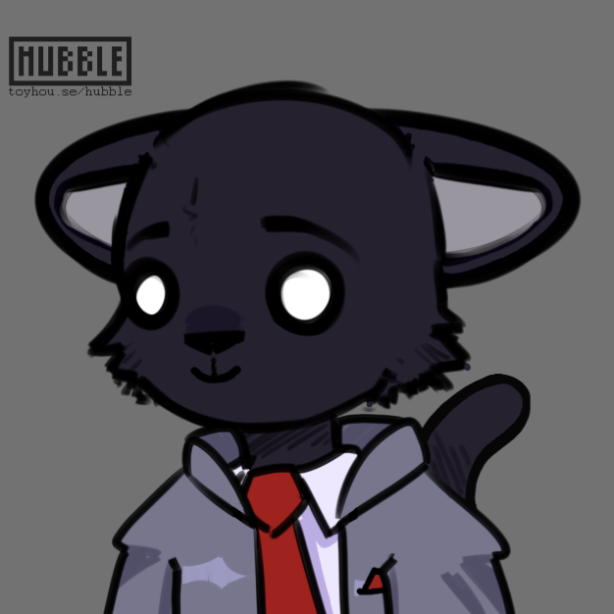
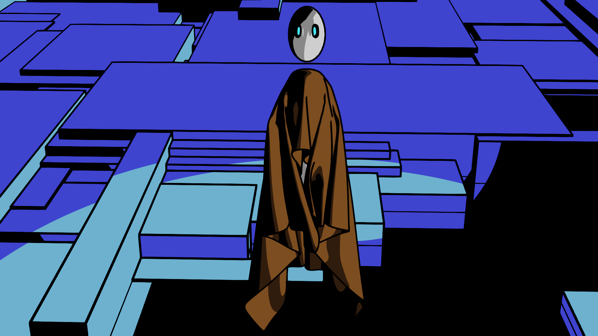

Sobre Mí

Estoy un estudiante de grado en la Universidad de Pittsburgh donde persiguo una especializaciones en la informática, la lingüística y español. Originalmente, soy de Hawley, PA pero me mudo a Pittsburgh, PA durante el año escolar. Con respecto a mis logros profesionales: realizo investigaciones lingüísticas con Dr. Na-Rae Han y Dr. Alan Juffs, estoy un asistente de enseñanza para Dr. John Ramirez en CS445 y siervo como un Provost Academy Leader. En cuanto a mis logros pasados: gané CSC Hacks 2020, el Hackathon anual de la universidad, hacía trabajos voluntarios en la clase de inglés de la bibioteca pública de Carnegie y participaba un numerosos consejos académico. Mis intereses principales de investigación son el diseño de los videojuegos y la analización de idiomas naturales (natural language processing en inglés). Finalmente, mis pasatiempos son: jugar los videojuegos, escribir cuentos y aprender español.
Recursos Adicionales
Si quiere conocerme mejor, sugiero que vea estos enlaces:
Proyectos Destacados
Twine Game
Here, there will be a link to my Twine Game once it is created.
Enjoy this song in the meantime
App Concept
Here, there will be a link to my App Concept once it is created.
Enjoy this final paper in the meantime
Video Project
Here, there will be a link to my Video Project once it is created.
Enjoy this video of my CSC Hacks 2020 project in the mean time.